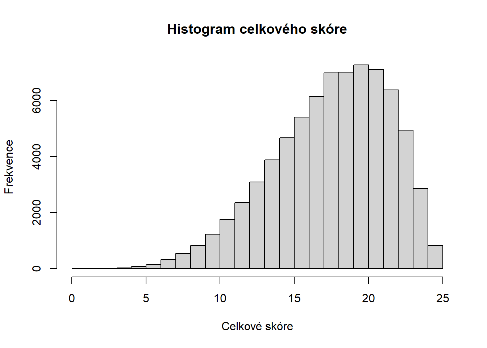
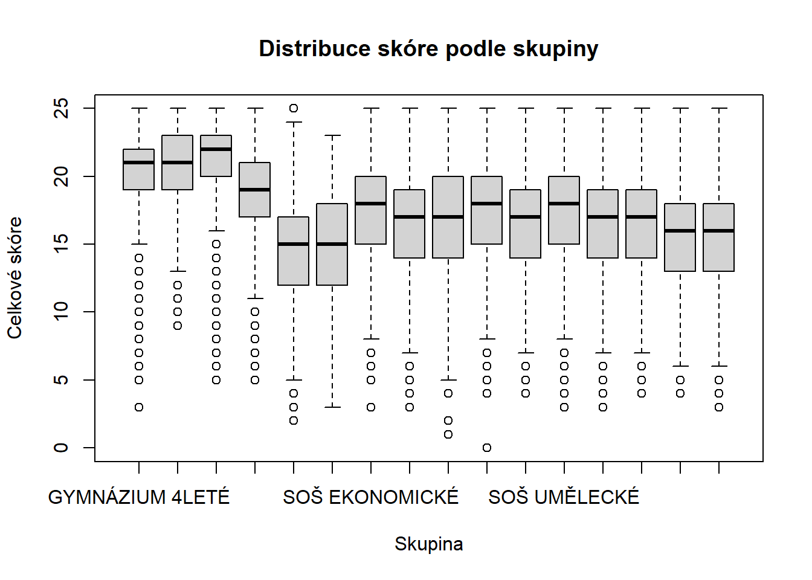

Načtěte dataset “item_data”, seznamte se s jejich strukturou pomocí funkce summary.
Vytvořte nový dataset “Data”, který bude obsahovat kategoriální proměnné smo16, smo16_nazev, prvomaturant, termin a položky s binárním hodnocením (bodové hodnocení 0/1).
Z datasetu “Data” vytvořte nový dataset “items”, který bude obsahovat pouze položková data.
NoteŘešení Úkolu 1
# Část 1summary(item_data)
projekt_nazev zkouska smo16 smo16_nazev
Length:73858 Length:73858 Length:73858 Length:73858
Class :character Class :character Class :character Class :character
Mode :character Mode :character Mode :character Mode :character
prvomaturant termin zkouska_povinna k1.1
Min. :0.0000 Length:73858 Length:73858 Min. :1.000
1st Qu.:1.0000 Class :character Class :character 1st Qu.:2.000
Median :1.0000 Mode :character Mode :character Median :2.000
Mean :0.9737 Mean :1.911
3rd Qu.:1.0000 3rd Qu.:2.000
Max. :1.0000 Max. :9.000
k1.2 k1.3 k1.4 k2.1
Min. :1.000 Min. :1.000 Min. :1.000 Length:73858
1st Qu.:1.000 1st Qu.:2.000 1st Qu.:2.000 Class :character
Median :1.000 Median :2.000 Median :2.000 Mode :character
Mean :1.199 Mean :1.986 Mean :1.839
3rd Qu.:1.000 3rd Qu.:2.000 3rd Qu.:2.000
Max. :9.000 Max. :9.000 Max. :9.000
k2.2 k3 k4 k5
Length:73858 Min. :1.00 Min. :1.000 Min. :1.000
Class :character 1st Qu.:1.00 1st Qu.:3.000 1st Qu.:3.000
Mode :character Median :1.00 Median :3.000 Median :3.000
Mean :1.18 Mean :2.952 Mean :2.969
3rd Qu.:1.00 3rd Qu.:3.000 3rd Qu.:3.000
Max. :9.00 Max. :9.000 Max. :9.000
k6 k7 k8 k9.1
Min. :1.000 Min. :1.000 Min. :1.000 Min. :1.000
1st Qu.:4.000 1st Qu.:1.000 1st Qu.:3.000 1st Qu.:1.000
Median :4.000 Median :1.000 Median :3.000 Median :1.000
Mean :3.726 Mean :1.447 Mean :3.071 Mean :1.479
3rd Qu.:4.000 3rd Qu.:1.000 3rd Qu.:3.000 3rd Qu.:1.000
Max. :9.000 Max. :9.000 Max. :9.000 Max. :9.000
k9.2 k9.3 k10.1 k10.2
Min. :1.000 Min. :1.000 Length:73858 Length:73858
1st Qu.:5.000 1st Qu.:3.000 Class :character Class :character
Median :5.000 Median :3.000 Mode :character Mode :character
Mean :4.964 Mean :3.181
3rd Qu.:5.000 3rd Qu.:4.000
Max. :9.000 Max. :9.000
k11.1 k11.2 k11.3 k11.4 k11.5
Min. :1.000 Min. :1.000 Min. :1.000 Min. :1.000 Min. :1.00
1st Qu.:5.000 1st Qu.:3.000 1st Qu.:2.000 1st Qu.:1.000 1st Qu.:4.00
Median :5.000 Median :3.000 Median :2.000 Median :1.000 Median :4.00
Mean :4.994 Mean :3.004 Mean :2.017 Mean :1.087 Mean :3.97
3rd Qu.:5.000 3rd Qu.:3.000 3rd Qu.:2.000 3rd Qu.:1.000 3rd Qu.:4.00
Max. :9.000 Max. :9.000 Max. :9.000 Max. :9.000 Max. :9.00
k12.1 k12.2 k12.3 k12.4
Min. :1.000 Min. :1.000 Min. :1.000 Min. :1.000
1st Qu.:2.000 1st Qu.:1.000 1st Qu.:2.000 1st Qu.:2.000
Median :2.000 Median :1.000 Median :2.000 Median :2.000
Mean :1.989 Mean :1.035 Mean :1.983 Mean :1.984
3rd Qu.:2.000 3rd Qu.:1.000 3rd Qu.:2.000 3rd Qu.:2.000
Max. :9.000 Max. :9.000 Max. :9.000 Max. :9.000
k13 k14 k15 k16
Length:73858 Min. :1.000 Min. :1.000 Min. :1.000
Class :character 1st Qu.:1.000 1st Qu.:2.000 1st Qu.:2.000
Mode :character Median :1.000 Median :2.000 Median :2.000
Mean :1.536 Mean :2.106 Mean :2.569
3rd Qu.:2.000 3rd Qu.:2.000 3rd Qu.:3.000
Max. :9.000 Max. :9.000 Max. :9.000
k17 k18 k19.1 k19.2
Min. :1.000 Min. :1.000 Min. :1.000 Min. :1.000
1st Qu.:2.000 1st Qu.:1.000 1st Qu.:1.000 1st Qu.:2.000
Median :3.000 Median :2.000 Median :1.000 Median :2.000
Mean :2.465 Mean :1.879 Mean :1.024 Mean :1.868
3rd Qu.:3.000 3rd Qu.:2.000 3rd Qu.:1.000 3rd Qu.:2.000
Max. :9.000 Max. :9.000 Max. :9.000 Max. :9.000
k19.3 k19.4 k20 k21
Min. :1.000 Min. :1.000 Min. :1.000 Min. :1.000
1st Qu.:2.000 1st Qu.:2.000 1st Qu.:1.000 1st Qu.:2.000
Median :2.000 Median :2.000 Median :1.000 Median :3.000
Mean :1.876 Mean :1.915 Mean :1.524 Mean :2.552
3rd Qu.:2.000 3rd Qu.:2.000 3rd Qu.:2.000 3rd Qu.:3.000
Max. :9.000 Max. :9.000 Max. :9.000 Max. :9.000
k22 k23 k24.1 k24.2
Min. :1.000 Min. :1.000 Min. :1.000 Min. :1.000
1st Qu.:4.000 1st Qu.:4.000 1st Qu.:2.000 1st Qu.:1.000
Median :4.000 Median :4.000 Median :2.000 Median :1.000
Mean :3.875 Mean :3.742 Mean :1.798 Mean :1.162
3rd Qu.:4.000 3rd Qu.:4.000 3rd Qu.:2.000 3rd Qu.:1.000
Max. :9.000 Max. :9.000 Max. :9.000 Max. :9.000
k24.3 k24.4 k25 k26 k27
Min. :1.000 Min. :1.000 Min. :1.00 Min. :1.000 Min. :1.000
1st Qu.:1.000 1st Qu.:1.000 1st Qu.:1.00 1st Qu.:1.000 1st Qu.:2.000
Median :1.000 Median :1.000 Median :1.00 Median :1.000 Median :3.000
Mean :1.283 Mean :1.298 Mean :1.12 Mean :1.249 Mean :2.583
3rd Qu.:2.000 3rd Qu.:2.000 3rd Qu.:1.00 3rd Qu.:1.000 3rd Qu.:3.000
Max. :9.000 Max. :9.000 Max. :9.00 Max. :9.000 Max. :9.000
k28 k29.1 k29.2 k29.3
Length:73858 Min. :1.000 Min. :1.000 Min. :1.000
Class :character 1st Qu.:5.000 1st Qu.:3.000 1st Qu.:2.000
Mode :character Median :5.000 Median :3.000 Median :2.000
Mean :4.199 Mean :3.778 Mean :2.404
3rd Qu.:5.000 3rd Qu.:6.000 3rd Qu.:2.000
Max. :9.000 Max. :9.000 Max. :9.000
k29.4 k30 k31 k32
Min. :1.000 Length:73858 Min. :1.000 Min. :1.000
1st Qu.:4.000 Class :character 1st Qu.:3.000 1st Qu.:3.000
Median :4.000 Mode :character Median :3.000 Median :4.000
Mean :3.971 Mean :2.983 Mean :3.431
3rd Qu.:4.000 3rd Qu.:3.000 3rd Qu.:4.000
Max. :9.000 Max. :9.000 Max. :9.000
b1 b2.1 b2.2 b3
Min. :0.00 Min. :0.0000 Min. :0.0000 Min. :0.0000
1st Qu.:1.00 1st Qu.:1.0000 1st Qu.:0.0000 1st Qu.:1.0000
Median :2.00 Median :1.0000 Median :1.0000 Median :1.0000
Mean :1.55 Mean :0.8809 Mean :0.6341 Mean :0.9157
3rd Qu.:2.00 3rd Qu.:1.0000 3rd Qu.:1.0000 3rd Qu.:1.0000
Max. :2.00 Max. :1.0000 Max. :1.0000 Max. :1.0000
b4 b5 b6 b7
Min. :0.0000 Min. :0.0000 Min. :0.0000 Min. :0.0000
1st Qu.:1.0000 1st Qu.:1.0000 1st Qu.:1.0000 1st Qu.:1.0000
Median :1.0000 Median :1.0000 Median :1.0000 Median :1.0000
Mean :0.8293 Mean :0.8229 Mean :0.8531 Mean :0.7683
3rd Qu.:1.0000 3rd Qu.:1.0000 3rd Qu.:1.0000 3rd Qu.:1.0000
Max. :1.0000 Max. :1.0000 Max. :1.0000 Max. :1.0000
b8 b9 b10.1 b10.2
Min. :0.000 Min. :0.00 Min. :0.0000 Min. :0.0000
1st Qu.:1.000 1st Qu.:2.00 1st Qu.:0.0000 1st Qu.:0.0000
Median :1.000 Median :3.00 Median :1.0000 Median :1.0000
Mean :0.871 Mean :2.43 Mean :0.6113 Mean :0.5676
3rd Qu.:1.000 3rd Qu.:3.00 3rd Qu.:1.0000 3rd Qu.:1.0000
Max. :1.000 Max. :3.00 Max. :1.0000 Max. :1.0000
b11 b12 b13 b14
Min. :0.000 Min. :0.000 Min. :0.000 Min. :0.0000
1st Qu.:3.000 1st Qu.:2.000 1st Qu.:2.000 1st Qu.:0.0000
Median :3.000 Median :2.000 Median :3.000 Median :1.0000
Mean :2.841 Mean :1.892 Mean :2.244 Mean :0.7414
3rd Qu.:3.000 3rd Qu.:2.000 3rd Qu.:3.000 3rd Qu.:1.0000
Max. :3.000 Max. :2.000 Max. :3.000 Max. :1.0000
b15 b16 b17 b18
Min. :0.000 Min. :0.0000 Min. :0.0000 Min. :0.0000
1st Qu.:1.000 1st Qu.:0.0000 1st Qu.:0.0000 1st Qu.:0.0000
Median :1.000 Median :0.0000 Median :0.0000 Median :1.0000
Mean :0.893 Mean :0.4547 Mean :0.2258 Mean :0.6056
3rd Qu.:1.000 3rd Qu.:1.0000 3rd Qu.:0.0000 3rd Qu.:1.0000
Max. :1.000 Max. :1.0000 Max. :1.0000 Max. :1.0000
b19 b20 b21 b22
Min. :0.000 Min. :0.0000 Min. :0.0000 Min. :0.000
1st Qu.:1.000 1st Qu.:0.0000 1st Qu.:0.0000 1st Qu.:1.000
Median :2.000 Median :1.0000 Median :0.0000 Median :1.000
Mean :1.588 Mean :0.7337 Mean :0.4926 Mean :0.929
3rd Qu.:2.000 3rd Qu.:1.0000 3rd Qu.:1.0000 3rd Qu.:1.000
Max. :2.000 Max. :1.0000 Max. :1.0000 Max. :1.000
b23 b24 b25 b26
Min. :0.0000 Min. :0.000 Min. :0.0000 Min. :0.0000
1st Qu.:1.0000 1st Qu.:1.000 1st Qu.:1.0000 1st Qu.:1.0000
Median :1.0000 Median :1.000 Median :1.0000 Median :1.0000
Mean :0.8391 Mean :1.185 Mean :0.9184 Mean :0.8747
3rd Qu.:1.0000 3rd Qu.:2.000 3rd Qu.:1.0000 3rd Qu.:1.0000
Max. :1.0000 Max. :2.000 Max. :1.0000 Max. :1.0000
b27 b28 b29 b30
Min. :0.0000 Min. :0.0000 Min. :0.000 Min. :0.00
1st Qu.:0.0000 1st Qu.:0.0000 1st Qu.:2.000 1st Qu.:0.00
Median :1.0000 Median :1.0000 Median :3.000 Median :2.00
Mean :0.5885 Mean :0.6375 Mean :2.865 Mean :1.75
3rd Qu.:1.0000 3rd Qu.:1.0000 3rd Qu.:4.000 3rd Qu.:3.00
Max. :1.0000 Max. :1.0000 Max. :4.000 Max. :4.00
b31 b32 dt_body dt_skor
Min. :0.0000 Min. :0.0000 Min. : 0.00 Min. : 0.00
1st Qu.:0.0000 1st Qu.:0.0000 1st Qu.:32.00 1st Qu.: 64.00
Median :1.0000 Median :1.0000 Median :37.00 Median : 74.00
Mean :0.6362 Mean :0.6445 Mean :36.31 Mean : 72.63
3rd Qu.:1.0000 3rd Qu.:1.0000 3rd Qu.:42.00 3rd Qu.: 84.00
Max. :1.0000 Max. :1.0000 Max. :50.00 Max. :100.00
smo16 smo16_nazev prvomaturant termin
Length:73858 Length:73858 Min. :0.0000 Length:73858
Class :character Class :character 1st Qu.:1.0000 Class :character
Mode :character Mode :character Median :1.0000 Mode :character
Mean :0.9737
3rd Qu.:1.0000
Max. :1.0000
b2.1 b2.2 b3 b4
Min. :0.0000 Min. :0.0000 Min. :0.0000 Min. :0.0000
1st Qu.:1.0000 1st Qu.:0.0000 1st Qu.:1.0000 1st Qu.:1.0000
Median :1.0000 Median :1.0000 Median :1.0000 Median :1.0000
Mean :0.8809 Mean :0.6341 Mean :0.9157 Mean :0.8293
3rd Qu.:1.0000 3rd Qu.:1.0000 3rd Qu.:1.0000 3rd Qu.:1.0000
Max. :1.0000 Max. :1.0000 Max. :1.0000 Max. :1.0000
b5 b6 b7 b8
Min. :0.0000 Min. :0.0000 Min. :0.0000 Min. :0.000
1st Qu.:1.0000 1st Qu.:1.0000 1st Qu.:1.0000 1st Qu.:1.000
Median :1.0000 Median :1.0000 Median :1.0000 Median :1.000
Mean :0.8229 Mean :0.8531 Mean :0.7683 Mean :0.871
3rd Qu.:1.0000 3rd Qu.:1.0000 3rd Qu.:1.0000 3rd Qu.:1.000
Max. :1.0000 Max. :1.0000 Max. :1.0000 Max. :1.000
b10.1 b10.2 b14 b15
Min. :0.0000 Min. :0.0000 Min. :0.0000 Min. :0.000
1st Qu.:0.0000 1st Qu.:0.0000 1st Qu.:0.0000 1st Qu.:1.000
Median :1.0000 Median :1.0000 Median :1.0000 Median :1.000
Mean :0.6113 Mean :0.5676 Mean :0.7414 Mean :0.893
3rd Qu.:1.0000 3rd Qu.:1.0000 3rd Qu.:1.0000 3rd Qu.:1.000
Max. :1.0000 Max. :1.0000 Max. :1.0000 Max. :1.000
b16 b17 b18 b20
Min. :0.0000 Min. :0.0000 Min. :0.0000 Min. :0.0000
1st Qu.:0.0000 1st Qu.:0.0000 1st Qu.:0.0000 1st Qu.:0.0000
Median :0.0000 Median :0.0000 Median :1.0000 Median :1.0000
Mean :0.4547 Mean :0.2258 Mean :0.6056 Mean :0.7337
3rd Qu.:1.0000 3rd Qu.:0.0000 3rd Qu.:1.0000 3rd Qu.:1.0000
Max. :1.0000 Max. :1.0000 Max. :1.0000 Max. :1.0000
b21 b22 b23 b25
Min. :0.0000 Min. :0.000 Min. :0.0000 Min. :0.0000
1st Qu.:0.0000 1st Qu.:1.000 1st Qu.:1.0000 1st Qu.:1.0000
Median :0.0000 Median :1.000 Median :1.0000 Median :1.0000
Mean :0.4926 Mean :0.929 Mean :0.8391 Mean :0.9184
3rd Qu.:1.0000 3rd Qu.:1.000 3rd Qu.:1.0000 3rd Qu.:1.0000
Max. :1.0000 Max. :1.000 Max. :1.0000 Max. :1.0000
b26 b27 b28 b31
Min. :0.0000 Min. :0.0000 Min. :0.0000 Min. :0.0000
1st Qu.:1.0000 1st Qu.:0.0000 1st Qu.:0.0000 1st Qu.:0.0000
Median :1.0000 Median :1.0000 Median :1.0000 Median :1.0000
Mean :0.8747 Mean :0.5885 Mean :0.6375 Mean :0.6362
3rd Qu.:1.0000 3rd Qu.:1.0000 3rd Qu.:1.0000 3rd Qu.:1.0000
Max. :1.0000 Max. :1.0000 Max. :1.0000 Max. :1.0000
b32
Min. :0.0000
1st Qu.:0.0000
Median :1.0000
Mean :0.6445
3rd Qu.:1.0000
Max. :1.0000
# Část 3items <- Data[,-c(1:4)]
Úkol 2 – Celkové skóre a jeho rozdělení
Spočítejte celkové skóre binárních položek každého studenta (proměnná score) a standardizované skóre binárních položek (proměnná std_score)
Podívejte se na základní popisné statistiky.
Vykreslete histogram.
TipNápověda k Úkolu 2
Celkové skóre: rowSums(items). Histogram: hist(score).
NoteŘešení Úkolu 2
score <-rowSums(items)summary(score)
Min. 1st Qu. Median Mean 3rd Qu. Max.
0.00 15.00 18.00 17.97 21.00 25.00
hist( score,main ="Histogram celkového skóre",xlab ="Celkové skóre",ylab ="Frekvence")

Úkol 3 – Rozdíly ve skóre mezi skupinami
Vyberte si jednu z kategoriálních proměnných 1. Porovnejte rozdělení skóre mezi skupinami pomocí boxplotů. 2. Spočítejte průměrné skóre podle skupin. 3. Spočítejte počet respondentů v jednotlivých kategoriích.
TipNápověda k Úkolu 3
Použijte boxplot(score ~ group), tapply(score, group, mean) a table(group) nebo tapply(score, group, length).
# pro smo16_nazevgroup <- Data$smo16_nazevboxplot( score ~ group,main ="Distribuce skóre podle skupiny",xlab ="Skupina",ylab ="Celkové skóre")

tapply(score, group, mean)
GYMNÁZIUM 4LETÉ GYMNÁZIUM 6LETÉ
20.31278 20.88717
GYMNÁZIUM 8LETÉ LYCEUM
21.13592 18.59030
NÁSTAVBOVÉ STUDIUM OSTATNÍ NÁSTAVBOVÉ STUDIUM TECHNICKÉ
14.59981 14.69979
SOŠ EKONOMICKÉ SOŠ HOTELOVÉ A PODNIKATELSKÉ
17.50266 16.63631
SOŠ PEDAGOGICKÉ A HUMANITNÍ SOŠ TECHNICKÉ SKUPINY 1
16.94337 17.43639
SOŠ TECHNICKÉ SKUPINY 2 SOŠ UMĚLECKÉ
16.44559 17.37512
SOŠ ZDRAVOTNICKÉ SOŠ ZEMĚDĚLSKÉ
16.37619 16.67353
SOU OSTATNÍ SOU TECHNICKÉ
15.66868 15.58293
tapply(score, group, length)
GYMNÁZIUM 4LETÉ GYMNÁZIUM 6LETÉ
12440 2127
GYMNÁZIUM 8LETÉ LYCEUM
8027 4081
NÁSTAVBOVÉ STUDIUM OSTATNÍ NÁSTAVBOVÉ STUDIUM TECHNICKÉ
4163 946
SOŠ EKONOMICKÉ SOŠ HOTELOVÉ A PODNIKATELSKÉ
4508 4908
SOŠ PEDAGOGICKÉ A HUMANITNÍ SOŠ TECHNICKÉ SKUPINY 1
6039 10509
SOŠ TECHNICKÉ SKUPINY 2 SOŠ UMĚLECKÉ
1838 3039
SOŠ ZDRAVOTNICKÉ SOŠ ZEMĚDĚLSKÉ
3788 2282
SOU OSTATNÍ SOU TECHNICKÉ
1823 3340